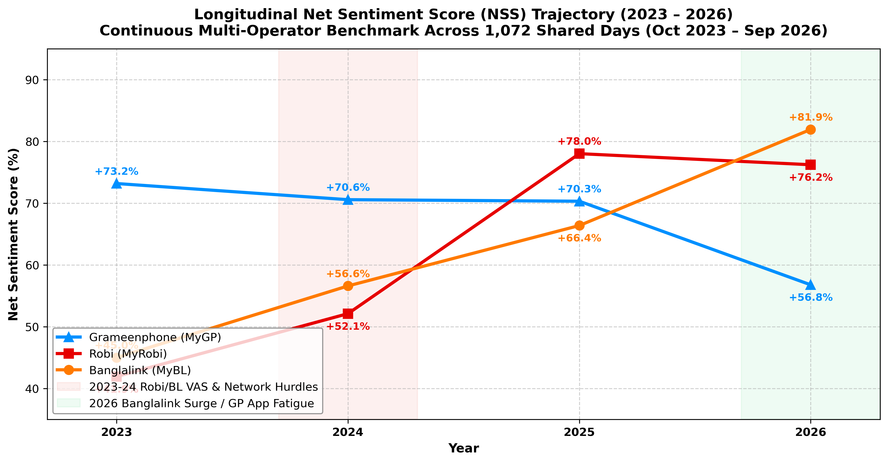
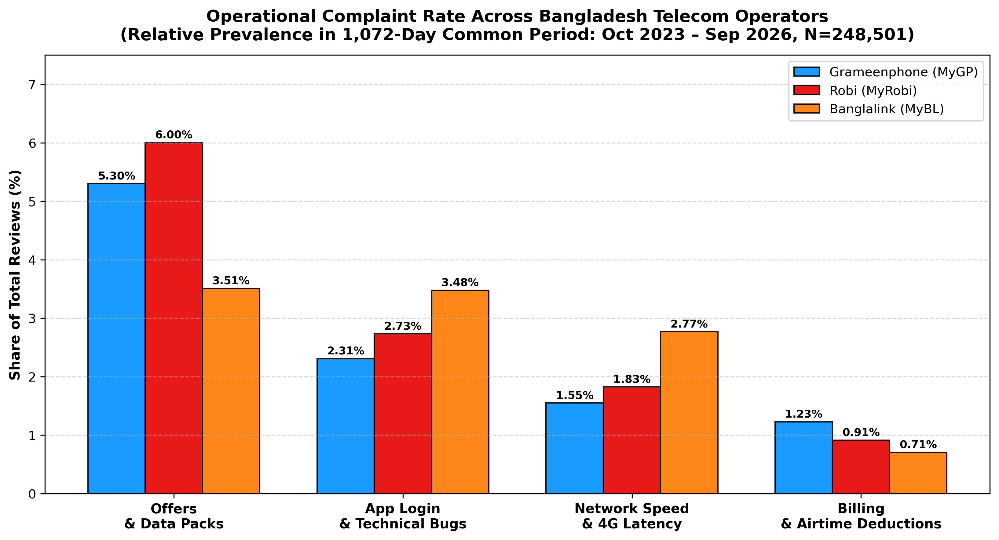
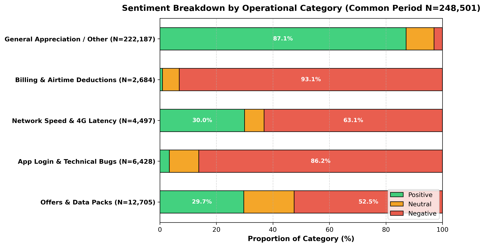

Telecom Voice-of-Customer (VoC) Intelligence Engine
An enterprise end-to-end NLP and Business Intelligence pipeline analyzing customer sentiment, operational complaints, and product trajectories across Bangladesh’s premier telecommunications operators: Grameenphone Ltd. (operating the MyGP platform), Robi Axiata Limited (operating the My Robi platform), and Banglalink Digital Communications Limited (operating the MyBL platform).
Throughout this case study, operators are subsequently referred to as Grameenphone, Robi, and Banglalink (presented consistently in this serial).
Exact continuous 1,072-day window (Oct 24, 2023 – Sep 30, 2026) ensuring zero temporal bias.
Soft-Voting Ensemble (0.7684 Macro-F1 on Sentiment, 87.4% on Category) running at ~18k rev/s.
Full longitudinal repository from Jan 2020 through Sep 2026 across all three operator platforms.
Cross-operator Net Sentiment: Grameenphone +69.8%, Robi +71.7%, Banglalink +71.3%.

Grameenphone (MyGP)
+69.8% NSS161,491 reviews (65.0% share) • 79.7% Positive
Scale Anchor • High Brand Stability

Robi (MyRobi)
+71.7% NSS43,720 reviews (17.6% share) • 80.7% Positive
NSS Leader • 2025 Turnaround Champion

Banglalink (MyBL)
+71.3% NSS43,290 reviews (17.4% share) • 80.9% Positive
Agile Growth • 2026 Peak Leader (+81.9%)
Market Sentiment Benchmarks & Departmental Analytics
Net Sentiment Score (NSS) Comparison
Figure 1.1
NSS Formula: % Positive − % Negative. Evaluated across the 1,072-day common window, Grameenphone (+69.8% NSS across 161.5k reviews) anchors the volume, while Robi (+71.7% NSS) and Banglalink (+71.3% NSS) lead net customer sentiment.
Sentiment Share Distribution by Operator
Figure 1.2
Class Balance: Grameenphone exhibits 79.7% positive and 9.9% negative feedback; Robi achieves 80.7% positive and 9.1% negative; Banglalink records 80.9% positive and 9.6% negative sentiment.
Multi-Year Net Sentiment Trajectory (2023 – 2026)
Tracking Continuous Monthly Net Sentiment Across 1,072 Shared Days

Actionable Complaint Rates by Operator
Figure 1.4
Complaint breakdown across functional domains: Grameenphone exhibits the highest billing & airtime deduction complaint rate (1.23%); Robi receives the most offers/pack complaints (6.00%); Banglalink users report higher app login glitches (3.48%) and network latency (2.77%).
Sentiment Composition per Operational Category
Figure 1.5
Billing complaints carry an intense negative polarization (>65% negative sentiment across all brands), while Offers and Data Packs divide user sentiment based on promotional fairness versus package expiration rules.
Year-by-Year Strategic Inflection Points
| Year Period | Grameenphone (MyGP) | Robi (MyRobi) | Banglalink (MyBL) | Historical Strategic Context |
|---|---|---|---|---|
| 2023 (Q4) | +73.2% (19,829 revs) | +41.9% ⚠️ (1,888 revs) | +45.0% (1,384 revs) | The 2023 Friction Point: Robi and Banglalink faced acute onboarding and airtime deduction complaints (22.4% negative on Robi), while Grameenphone enjoyed solid brand goodwill. |
| 2024 | +70.6% (75,057 revs) | +52.1% (6,816 revs) | +56.6% (9,897 revs) | Grameenphone consolidated massive review volume with steady 70%+ NSS; Robi and Banglalink initiated major UX stability improvements. |
| 2025 | +70.3% (54,258 revs) | +78.0% 🚀 (16,115 revs) | +66.4% (10,238 revs) | The 2025 Robi Turnaround: Robi resolved core backend latency and modernized self-care, catapulting NSS to +78.0% (cutting negative reviews to just 6.0%). |
| 2026 | +56.8% 📉 (12,347 revs) | +76.2% (18,901 revs) | +81.9% 🏆 (21,771 revs) | The 2026 Market Reversal: Banglalink surged to industry-leading +81.9% NSS (only 5.2% negative) on strong gamified loyalty goodwill; Grameenphone dipped sharply to +56.8% NSS (17.4% negative) due to data pack pricing friction. |
Actionable Complaint Taxonomy by Operator
| Operational Domain | Grameenphone (161.5k) | Robi (43.7k) | Banglalink (43.3k) | Operational Diagnostic |
|---|---|---|---|---|
| Offers & Data Packs | 5.30% (8,561) | 6.00% ⚠️ (2,625) | 3.51% (1,519) | Robi and Grameenphone face significantly higher price sensitivity and validity expiration friction than Banglalink. |
| App Login & Technical Bugs | 2.31% (3,727) | 2.73% (1,195) | 3.48% ⚠️ (1,506) | Banglalink's Vulnerability: Highest authentication/session crashes and biometric login token timeouts. |
| Network Speed & 4G Latency | 1.55% (2,500) | 1.83% (798) | 2.77% ⚠️ (1,199) | Grameenphone maintains the lowest network complaint rate, while Banglalink users report indoor 4G dead zones. |
| Billing & Airtime Deductions | 1.23% ⚠️ (1,979) | 0.91% (399) | 0.71% (306) | Grameenphone's Primary Vulnerability: Nearly double the accidental VAS deduction rate of Banglalink. |
| General Appreciation / Other | 89.62% (144,724) | 88.52% (38,703) | 89.54% (38,760) | Positive app ratings, short praise ("good app", "5 star"), and generic customer greetings. |
Multi-Paradigm NLP Model Leaderboard
| Model Architecture | Target Task | CV Accuracy | Macro F1 | Inference Speed | Production Role & Strengths |
|---|---|---|---|---|---|
|
🥇
Hero Soft-Voting ML Ensemble
TF-IDF Char N-Grams + Multi-ML
|
Operational Category | 87.44% | 0.7845 | ~18,200 rev/s | 🏆 Overall Champion: Sub-word character n-grams excel on Romanized Banglish. |
|
🥇
Hero Soft-Voting ML Ensemble
Balanced Soft Voting Heads
|
Sentiment Analysis | 87.47% | 0.7684 | ~17,500 rev/s | 🏆 Selected Hero Sentiment Engine: Calibrated probability output across 3 polarities. |
| Multilingual MiniLM Head Dense Sentence Embeddings | Sentiment Analysis | 82.33% | 0.7475 | ~2,100 rev/s | 384-dimensional cross-lingual sentence semantic capture. |
| PyTorch BiLSTM + Self-Attention Bahdanau Attention & GPU | Sentiment Analysis | 81.50% | 0.7180 | GPU Batched | Attention isolates salient complaint tokens; 89.4% agreement with Ensemble. |
| BUET BanglaBERT Head Pretrained Native Bengali | Operational Category | 74.88% | 0.6253 | GPU Required | Native Bengali representations; sensitive to Romanized Banglish transliterations. |
Actionable Business Recommendations by Operator
Grameenphone (MyGP)
Scale Anchor • Market Leader
- "Where Did My Balance Go?" Hub: Build a zero-click transaction timeline detailing SMS, call, data, and VAS debits down to the minute to resolve the 1.23% billing complaint rate.
- Validity Rollover Flex: Enable unused data to roll over into the next recharge, directly mitigating the 5.30% data pack friction that caused the 2026 dip to +56.8%.
- Perks Bundling: Offset perceived high unit pricing by bundling OTT streaming and lifestyle perks into core data packs.
Robi (MyRobi)
Lifestyle & Engagement Leader
- 1-Tap VAS Cancellation Center: Deploy a centralized dashboard listing all active recurring services with one-tap deactivation to safeguard customer trust.
- Biometric Login Token Caching: Fix recurring authentication timeouts that generate the 2.73% technical app bug feedback.
- Intelligent Push Throttling: Apply ML to schedule personalized notifications from Amar Offer, avoiding alert fatigue.
Banglalink (MyBL)
Agile Value Champion
- Session Stability Overhaul: Address the 3.48% login glitch rate (the highest across operators) with hardened OTP caching and token refresh logic.
- Indoor 4G Edge Caching: Optimize suburban and indoor micro-tower coverage to curb the 2.77% network speed complaint rate.
- Monthly ARPU Conversion: Leverage peak 2026 goodwill (+81.9% NSS) to convert daily promotional deal switchers into sticky recurring monthly subscribers.
Project Limitations & Threats to Validity
To ensure responsible analytical interpretation and scientific transparency, several inherent methodological and domain boundaries must be explicitly noted when evaluating Voice-of-Customer intelligence:
Perception vs. Technical Reality
This pipeline measures customer perception and sentiment; it does not audit Call Detail Records (CDRs) or spectrum QoS telemetry. Claims of "balance theft" often stem from automated background OS updates or unpaid emergency balances, while "zero speed" complaints may reflect handset misconfiguration or dense concrete indoor shielding rather than telco billing or network failures.
Voluntary Self-Selection Bias
Public app store reviews exhibit classic bimodal self-selection: users are disproportionately driven to submit feedback during emotional extremes — either intense delight (promotional reward unlocks) or acute frustration (service disruptions). The silent majority of daily users with stable, satisfactory connectivity rarely submits written reviews.
Gamified Review Distortion
Telco self-care apps (notably MyBL and MyRobi) regularly run gamified promotional incentives (spin-to-win, free 500MB login bonuses). A segment of customer commentary consists of brief promotional affirmations ("nice 5gb free pailam", "good app") written to unlock rewards, creating an upward bias in positive sentiment and Net Sentiment Scores.
Linguistic Sparsity & Banglish Variance
Romanized Banglish lacks standardized phonetic orthography (e.g., "valo", "bhalo", "bahlo", "bala"). Ultra-short reviews ("bad", "best", "...", "ok") lack contextual diagnostic depth, making it impossible to isolate whether friction relates to pricing, UI, or latency without broader operational telemetry.
Channel Demographic Restriction
The dataset primarily benchmarks Android smartphone subscribers utilizing digital self-care apps. It excludes feature-phone users relying on USSD (*121#) / IVR interfaces, and rural demographics who interact with telcos primarily through physical retail agents.
Macroeconomic & Tariff Context
Sentiment metrics reflect the specific macroeconomic conditions, inflation rates, and BTRC regulatory tariff floors active during the 1,072-day common window (Oct 2023 – Sep 2026). Macro-level changes in consumer purchasing power influence price sensitivity independently of operator service quality.